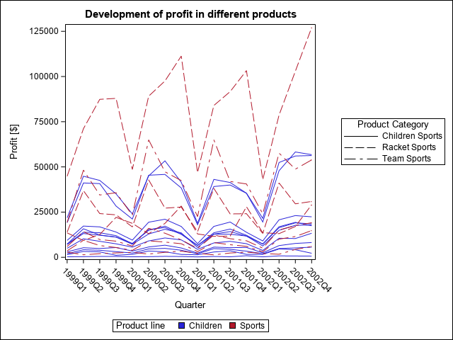

With the following code, you can generate a spaghetti plot in SAS. This is useful for showing longitudinal data of different group or individual patients. The example plot is grouped by several different variables:
group=: individual lines, e.g. data of one individual patients,grouplc=: line colours, e.g. treatment group, andgrouplp=: line pattern, e.g. belonging to the per-protocol set or not.
It is generated by the SAS procedure proc sgplot using the code below:
* Define library name ("." is the current directory);
libname mylib ".";
* Filter relevant data;
data orsales;
set sashelp.orsales;
where (Product_Line = "Sports" or Product_Line = "Children")
and (Product_Category = "Children Sports"
or Product_Category = "Team Sports"
or Product_Category="Racket Sports");
run;
* Generate spaghetti plot and save in .\fig\-subfolder.;
ods _all_ close;
ods listing gpath="%sysfunc(pathname(mylib))\fig";
ods graphics / imagename="spaghetti_plot"
imagefmt=png reset=index;
proc sgplot data=orsales;
title 'Development of profit in different products';
series x=Quarter y=Profit/ group=Product_Group
grouplc=Product_Line
grouplp=Product_Category name='grouping';
keylegend 'grouping' / type=linecolor title="Product line";
keylegend 'grouping' /
type=linepattern title="Product Category";
xaxis label="Quarter";
yaxis label="Profit [$]";
run;

Spaghetti plot as generated by the SAS procedure sgplot